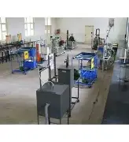
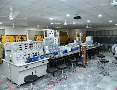

Educational focus
Keeping the needs of learners and institutions at the center.
01 — THE COMPANY
GAL Technology PLC supports educational institutions through the importation, supply, and distribution of laboratory equipment and scientific materials.
OUR PURPOSE
To support effective science and engineering education by helping institutions access suitable laboratory equipment and scientific materials.
OUR DIRECTION
To contribute to learning environments where practical experimentation, scientific curiosity, and technical knowledge can grow.
WHAT GUIDES US
Keeping the needs of learners and institutions at the center.
Building dependable working relationships with institutions and suppliers.
Supporting practical learning, experimentation, and research.

LABORATORY ENVIRONMENTA MESSAGE FROM MANAGEMENT
We believe that access to appropriate laboratory equipment can make scientific learning more practical, engaging, and meaningful. GAL Technology PLC is committed to working with educational institutions, suppliers, and partners to support environments where students and professionals can explore, test ideas, and develop skills.
Owner / General Manager

OUR AREAS OF INTEREST
From engineering and physical sciences to chemistry and biological sciences, GAL Technology PLC focuses on equipment and materials that can support practical education in a range of disciplines.
Explore catalog categories ↗